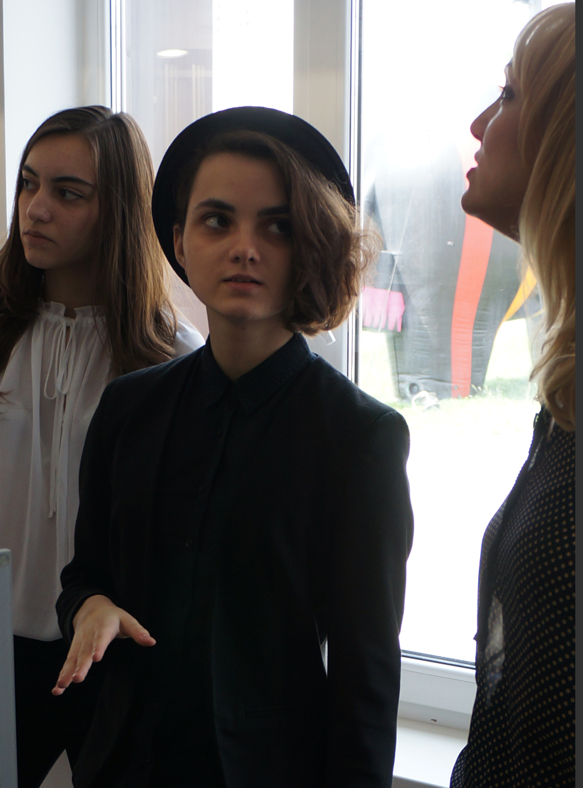

Name: Victoria Butrym
Date of birth: 10.11.99 (19 y.o.)
Country: Belarus, Minsk
Phone: +375-29-771-24-95
Education:
- Gymnasium №12, Minsk (2006-2017)
- BNTU Architectural faculty (Architecture)
- English: School (11 years), University (1 year), GYMUN conference
Skills:
Beginner
Summary: Start career as a junior JS developer in EPAM and become a teamlead in 5 years.
- Python 3: book "A Byte of Python"
- Programming essentials: CS50 Harvard University lectures
- HTML/CSS Codeacademy.com